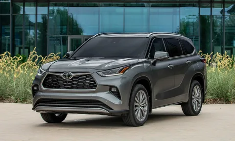

სპორტული მანქანა
Mercedes

Mercedes-Benz (German pronunciation: [mɛʁˌtseːdəs ˈbɛnts, -dɛs -] ⓘ),[6][7][a] commonly referred to simply as Mercedes and occasionally as Benz, is a German automotive brand that was founded in 1926. Mercedes-Benz AG (a subsidiary of the Mercedes-Benz Group, established in 2019) is based in Stuttgart, Baden-Württemberg, Germany.[1] Mercedes-Benz AG manufactures luxury vehicles and light commercial vehicles, all branded under the Mercedes-Benz name. From November 2019 onwards, the production of Mercedes-Benz-branded heavy commercial vehicles (trucks and buses) has been managed by Daimler Truck, which separated from the Mercedes-Benz Group to form an independent entity at the end of 2021.
ოჯახური მანქანა
Toyota
Toyota Motor Corporation (Japanese: トヨタ自動車株式会社, Hepburn: Toyota Jidōsha kabushikigaisha; IPA: [toꜜjota], English: /tɔɪˈjoʊtə/, commonly known as simply Toyota) is a Japanese multinational automotive manufacturer headquartered in Toyota City, Aichi, Japan. It was founded by Kiichiro Toyoda and incorporated on August 28, 1937. Toyota is the largest automobile manufacturer in the world, producing about 10 million vehicles per year.[1]